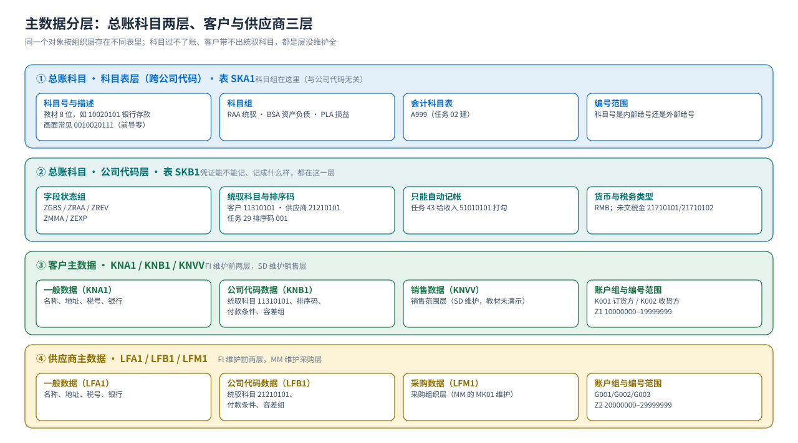
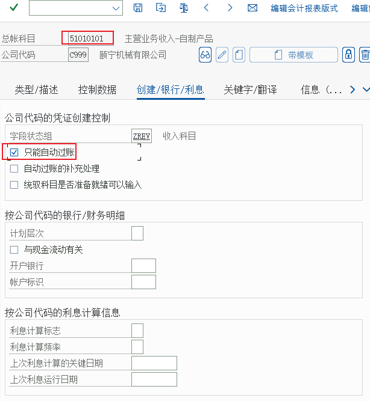

主数据
总账科目（两层）· 科目组与字段状态组 · 客户与供应商（三层 + 统驭科目）
FI 的主数据只有三样，但每一样都分层：总账科目（科目表层 / 公司代码层）、客户（一般 / 公司代码 / 销售数据）、供应商（一般 / 公司代码 / 采购数据）。另外还有两类「参数型主数据」必须一起理解：科目组与字段状态组。
总账科目是「两层 + 分视图」的
{kind=link}

为什么 FS00 里有两列状态（科目表 / 公司代码）
总账科目不是一条记录，而是两层：SKA1 科目表层（科目号、名称、科目组、科目表）与 SKB1 公司代码层（字段状态组、统驭科目、只能自动记帐、货币、税务类型）。FS00 的按钮条上「科目表」与「公司代码」两列，就是让你分别维护这两层。
常见故障：只建了科目表层没建公司代码层 → 凭证里能选到科目，但一过账就报错（该科目未在公司代码下维护）。
科目组与字段状态组（教材任务 06、07 的主角）
| 概念 | 控制什么 | 教材值 | 什么时候用到 |
|---|---|---|---|
| 科目组 Account Group | 科目本身的字段状态与编号范围：哪些字段必输/可选/隐藏，新科目号是否内部给号 | RAA 统驭科目（11300000–21699999）· BSA 资产负债 · PLA 损益 | FS00 创建科目时选科目组；科目组属于科目表层（与公司代码无关） |
| 字段状态组 Field Status Group | 凭证行项目的辅助核算项：业务范围、成本中心、订单、税基等是必输/可选/隐藏 | ZEXP 费用科目 · ZGBS 一般资产负债科目 · ZMMA 材料采购（GR/IR）· ZRAA 统驭科目-应收/应付 · ZREV 收入科目 | FS00 的「创建/银行/利息」页签里选字段状态组；它属于公司代码层 |
教材的原文重点（任务 07 第 2 步）「科目组是控制科目中的参数，字段状态组是控制凭证中的辅助核算项」——考试与面试都爱问这一句。另外任务 07 第 9 步系统会提示「不一致的字段状态，参加帮助文本」，回车即可返回，不影响配置结果。
教材在 C999 下建成的科目（任务 10–13，共 28 个）
| 科目号 | 科目名称 | 科目组/字段状态组（教材） | 用在哪个环节 |
|---|---|---|---|
10010101 | 现金 | 一般资产负债科目（ZGBS） | 现金业务、报表项目「货币资金」 |
10020101 | 银行存款-工行 / 中行（画面分录里显示 0010020111） | 一般资产负债科目 | 任务 20 实收资本入账、任务 39 付款的贷方 |
11310101 | 应收账款（客户统驭科目） | 统驭类科目组 RAA（ZRAA） | 所有客户的明细汇总到这里（任务 11、29） |
12010101 | 材料采购-GR/IR（中间过渡科目） | 材料采购科目组（ZMMA） | MM 收货与发票校验的对手科目（任务 12） |
12430101 | 存货-产成品 | 一般资产负债科目（ZGBS） | MM 收货的借方科目、报表项目「存货」 |
21210101 | 应付账款（供应商统驭科目） | 统驭类科目组 RAA（ZRAA） | 所有供应商的明细汇总到这里（任务 11、31） |
21710101 / 21710102 | 未交税金-进项税额 / 销项税额 | 一般资产负债科目 | 自动税务过账（任务 21 定义销项税 MWS → 21710102） |
31010101 | 实收资本 | 一般资产负债科目 | 任务 20 凭证的贷方 |
31410101 | 利润分配-未分配利润 | 一般资产负债科目 | 年结与报表项目 |
410901 | 留存收益科目（画面 410901X / 410901） | （任务 09 单独定义） | 年结时损益科目余额转入的科目 |
41010101 / 41010901 | 生产成本-原材料消耗 / 生产成本-订单差异 | 损益类科目（PLA） | PP 领料与订单差异（MM/PP 的 GBB 对方科目） |
41050101 / 41050121 | 制造费用-工资 / 制造费用-电费 | 损益类科目 | CO 的费用归集 |
51010101 / 51010201 | 主营业务收入-自制产品 / 贸易商品 | 收入科目（ZREV，任务 43 设为只能自动记帐） | SD 开票的收入贷方 |
54010101 · 54010201 · 54010301 · 54010401 | 主营业务成本-自制 / 贸易商品 / 采购价差 / 生产订单差异 | 损益类科目 | 成本结转与差异（采购价差 54010301、订单差异 54010401） |
55010101 · 55010111 · 55020101 · 55020111 · 55020121 · 55020131 · 55020141 · 55029101 | 销售费用-运费 / 市场费用；管理费用-工资 / 折旧 / 电话费 / 办公用品 / 租金 / 其他 | 损益类科目（ZEXP 费用科目） | 费用类手工凭证与 CO 分摊 |
怎么在自己系统里清点科目科目清单/汇总：教材任务 14 用
S_alr_87012326 显示科目汇总；单科目显示用 FS00 或 FS03；总账行项目用 FBL3N（经典）或 FAGLL03（新，教材未演示）。建科目/客户/供应商时最该盯住的 8 个字段
| 字段 | 在哪一层 | 教材值/示例 | 填错的后果 |
|---|---|---|---|
| 科目组 | 科目表层（SKA1） | RAA / BSA / PLA | 字段状态与编号范围不对，后面很难改（有数据后基本不能改） |
| 字段状态组 | 公司代码层（SKB1） | ZGBS / ZRAA / ZREV / ZMMA / ZEXP | 凭证录入时该要的不给输、不该要的强制输（辅助核算项乱） |
| 统驭科目 Reconciliation Account | 公司代码层（SKB1） | 客户 11310101 / 供应商 21210101 | 客户/供应商明细不汇总到正确科目，资产负债表应收账款/应付账款错位 |
| 只能自动记帐 | 公司代码层（SKB1） | 任务 43：51010101 收入科目打勾 | 不勾 → 有人能手工记收入；勾了以后手工记 SA 会被拒（这正是内部控制） |
| 货币 | 公司代码层 | RMB（教材环境） | 凭证货币与公司代码货币不一致时要换算，报表口径会变 |
| 税务类型 / 税码 | 公司代码层 + 凭证行 | 未交税金 21710101/21710102（任务 21） | 自动税务过账找不到科目，进项/销项税额记不平 |
| 客户编号范围 / 账户组 | 客户主数据（任务 26/27/28） | Z1 10000000–19999999 · Z2 20000000–29999999 | 编号给错组，客户号落在错误的区间，后续报表与权限都乱 |
| 排序码 Sort Key | 客户/供应商公司代码层（任务 29） | 001（教材画面写「统驭科目 11310101 排序码 001」） | 分配字段（如发票号）带不到行项目，清账时看不出是哪笔业务 |
客户与供应商主数据（三层）
| 层 | 组织层 | 内容 | 教材任务与 T-code |
|---|---|---|---|
| 一般数据 | 跨公司代码 | 名称、地址、税号、银行、沟通方式 | 客户 FD01（任务 29/30）· 供应商 FK01（任务 31） |
| 公司代码数据 | 公司代码 C999 | 统驭科目 11310101/21210101、付款条件、排序码、容差组、清账方式 | 同上；教材画面里「统驭科目 11310101 排序码 001」就是这一层 |
| 销售/采购数据 | 销售范围 / 采购组织 | （客户：销售数据；供应商：采购数据，由 MM 的 MK01 维护） | 教材 FI 部分未演示这一层 |
| 教材里的业务伙伴 | 号码 | 用途 |
|---|---|---|
| 远东造船厂（订货方） | 10000000 | 任务 32 开客户发票 58.000；任务 36 FD10N 显示余额 |
| 新益汽轮机厂 / 威力工贸公司 | 同一 Z1 区间 | 任务 29 一并建成，用于对比订货方与收货方 |
| 远东造船厂第三分公司（收货方） | 20000000 | 任务 30；归 Z2 编号范围 |
| 红星轴承厂 | 10000000 | 任务 31；MM 侧的采购供应商 |
| 长平铁工厂 / 思普机械设备进出口有限公司 | 10000001 / 20000000 | 任务 31 |
| 上海市电力公司 / 佳音地产公司 / 京通运输公司 | 30000000 / 30000001 / 30000002 | 任务 31（费用供应商）；京通运输公司是任务 41 FK10N 与 F-53 付款的对象 |
注意 FI 与 MM 共用同一批业务伙伴教材 MM 模块里的供应商 10000000 红星轴承厂，在 FI 里是同一张主数据：FI 负责一般数据与公司代码数据（
FK01），MM 补采购数据（MK01）。客户同理：FI 建公司代码层，SD 补销售层。常用的查询事务码（查主数据与明细）
| 想看什么 | T-code | 说明 |
|---|---|---|
| 总账科目主数据（两层一起） | FS00 / FS03 | 显示模式可以同时看科目表层与公司代码层 |
| 科目表层 / 公司代码层单独维护 | FSP0 / FSS0 | 教材未演示；项目上常用它们批量补字段 |
| 总账科目余额 | FS10N | 任务 21；新版本是 FAGLB03（教材未演示） |
| 总账科目行项目 | FBL3N / FAGLL03 | 教材未演示；查凭证流最常用 |
| 客户余额 / 行项目 | FD10N / FBL5N | 任务 36 用 FD10N |
| 供应商余额 / 行项目 | FK10N / FBL1N | 任务 41 用 FK10N |
| 客户/供应商主数据 | FD03 / FK03 | 显示模式 |
教材画面（主数据）


{kind=link}
